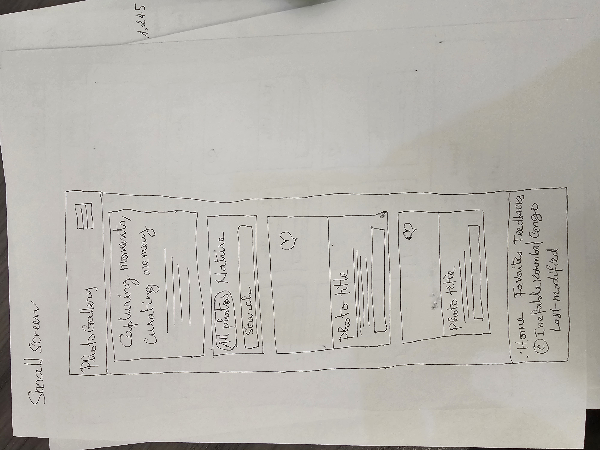
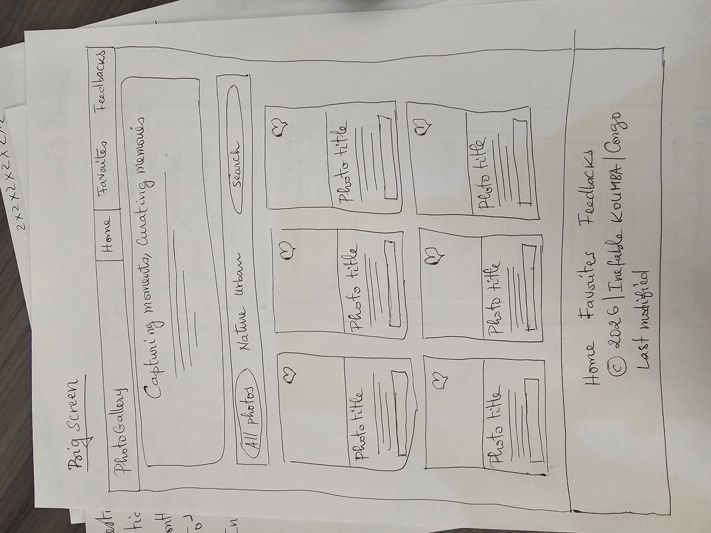

Site Name
PhotoGallery
Why this name? I chose "PhotoGallery" because it is simple and directly tells visitors what the site is about: a place to view, organize, and look back at photo collections.
Optional domain availability: photogallery-memories.org or myphotogallery.app
Site Purpose
The main goal of PhotoGallery is to give people who love taking pictures a clean and simple space to sort, filter, and save photos into themed albums like Nature, Urban, and Architecture.
On this site, users can:
- Browse a gallery of photos with category filters and click on any image to view details in a pop-up modal.
- Save their favorite pictures to custom albums that stay saved in their browser using local storage.
- Read the story behind the project and send feedback through a simple form that shows a confirmation page.
Target Audience Scenarios
Scenario 1
"How can I filter photos by categories like Nature or Architecture and see more details about a picture?"
Answer: On the home page, you can click category buttons to filter the grid, and click any photo to open a pop-up window showing the photographer, location, camera settings, and description.
Scenario 2
"Can I save my favorite photos without making an account?"
Answer: Yes. You can click the heart icon on any photo to
save it to your Favorites page. The site uses localStorage so your saved photos
stay saved even if you refresh or close the page.
Scenario 3
"Where can I learn more about this project or send feedback to the creator?"
Answer: You can visit the About page to read why I created this photo manager and fill out the visitor feedback form to share your thoughts.
Color Scheme
The color scheme uses dark tones similar to a photography darkroom, paired with a warm amber color for accents:
#0f172a
Used for the main page background and header.
#d97706
Used for buttons, active links, and highlights.
#1e293b
Used for card containers, modals, and boxes.
#f8fafc
Used for body text and headings for good contrast.
Typography
Two Google Fonts are used to keep the text clean and easy to read:
Heading Font: Playfair Display
PhotoGallery: Capturing Life in Frame
Where it is used: Used for main headings
(<h1>, <h2>) and section titles to give the site a
classic photo album style.
Body Font: Plus Jakarta Sans
Filter photos, preview details, and save your favorite memory boards.
Where it is used: Used for all paragraphs, navigation links, buttons, and form inputs so text is clear on screens of all sizes.
Wireframe Plan
These wireframe sketches show how the home page layout will adapt for small (mobile) and large (desktop) screens:
Small Screen (Mobile)

Large Screen (Desktop)
